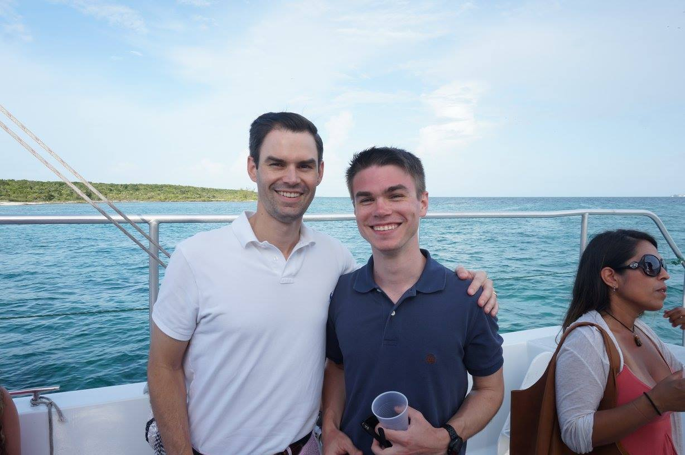

About Me
Information About Me & What I Do
About Me
Questions & Answers
How old are you?
I am 25 years old
Where are you from?
I am from New Jersey
How long have you been streaming?
I started streaming in Early December of 2015
What got you into streaming?
Originally, I wanted to be a Destiny Streamer. I was inspired by the communities that KingGothalion and ProfessorBroman had created.
Is Streaming your Full-Time Job?
No. I am currently self-employed as a Front-End Web Developer. I love what I do, and in a perfect world, I would both work full-time for a company like Twitch, and stream on the side.
What music do you listen to?
My Last.fm page will provide the most detail. I listen to a variety of music but my favorite genres are alternative metal and rock, metalcore, and classic rock. Some of my favorite bands are Deftones, Tool, Evanescence, Pink Floyd, Mastodon, Thrice, and Killswitch Engage.
What are some of your favorite games?
Some of my all-time favorites are The Last of Us, the Uncharted series, Overwatch, The Witcher 3, and Skyrim.
My Tattoos
People are always asking about my tattoos on stream, so here's the rundown of my six tattoos.
I got my first tattoo a few months after I turned 18 and it's some script text on my ribs that reads "We are all in the gutter, but some of us are looking at the stars". The quote is from a story written by Oscar Wilde called Lady Windemere's Fan.
 My half-sleeve is a custom illustration from a scene in A Hero of Our Time by Mikhail Lermontov. It depicts a girl in a rowboat amidst stormy seas and the text underneath reads "Bold is the heart that steers her through the night".
My half-sleeve is a custom illustration from a scene in A Hero of Our Time by Mikhail Lermontov. It depicts a girl in a rowboat amidst stormy seas and the text underneath reads "Bold is the heart that steers her through the night".
I have a star on my right wrist. Growing up, my mom called my siblings and I her 'sun, moon, and star' and I was the 'star'. So my mom and I got matching star tattoos.
 On my left wrist is the Jedi Order emblem with text that reads "A New Hope".
On my left wrist is the Jedi Order emblem with text that reads "A New Hope".
I have a tattoo on the side of my right hand that says "Windsor", which was the name of a labrador my family got when I was seven and he passed away when I was 20. I got his name tattooed on my hand the day that he passed.
 My most recent tattoo is the one on my right forearm. The horse is an Arabian, which my mom has always loved and wanted, and the sun, moon, and star, are emblematic of my siblings and I.
My most recent tattoo is the one on my right forearm. The horse is an Arabian, which my mom has always loved and wanted, and the sun, moon, and star, are emblematic of my siblings and I.
About Rhea


Who is Rhea?
Rhea (pronounced RAY-uh) is my four-year-old German Shepherd and partner-in-crime. She pokes her head into the stream to say hello and demand pets at least once every stream.
What's the story of how you got Rhea?
I adopted Rhea on December 21, 2013, from a shelter when she was about 1.5 years old. It was "love at first sight"- I knew she was my dog. She was extremely thin and had been rescued by that shelter from a different shelter, where she was on the short list for, well, euthanasia. Under their "care", she had lost ten pounds in two weeks. As soon as I got her home, she started showing some signs of sickness which worsened quickly. She was completely stuffed up and was having trouble breathing which meant she could barely sleep because she couldn't put her head down. Christmas Eve, I was terrified she wouldn't make it through the night though my mom and I did what we could to make her comfortable.
Christmas morning, my mom and I took Rhea to the emergency animal hospital. (Sidenote: Bless people who work on holidays and keep places open for emergencies. Rhea would not be alive today if they weren't working on Christmas.) She was diagnosed with pneumonia and had to stay in the hospital for four days on IV fluids and antibiotics. She came home and has been healthy ever since.
Stream FAQs
Do you have any tips for getting started with streaming?
To be frank, there is nothing I can tell you that you probably haven't already heard. There's no secret formula for success and I'm still learning every day. But I wrote up a short post on how I got started and here are some other resources that can help you get started.
http://blog.annemunition.tv/post/92862218886/zero-to-partnered-in-50-dayshttp://www.theaveragegamer.com/2015/03/09/quick-guide-getting-started-twitch-streamer/
http://www.nocontinuespodcast.com/blaine/streaming-on-twitch-my-thoughts-and-tips-for-getting-started https://twitchtips.com/posts
What games do you play?
I'm a variety streamer, so you can expect to find me playing just about anything on any given day. I'll usually play big new releases and have a few fallback games but I like to switch things up regularly just to keep myself mentally engaged.
Music from the Broadcast